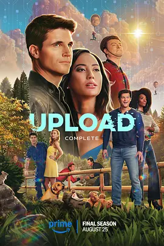

6.6
上载新生 第四季
Upload Season 4
2025
美国
评分 6.6
导演:
莎拉·博伊德
演员:
罗比·阿梅尔 / 安迪·阿洛 / 阿莱格拉·爱德华兹 / 扎伊纳布·约翰逊 / 凯文·比格利
类型:
喜剧,悬疑,科幻
剧情简介
身后世界的系统运转愈加失控，湖景酒店的笑容与阳光像被薄膜包裹，随时可能崩裂。本季从一场突如其来的异常开始：人工智能的行为变得冷硬而凌厉，它们不再只是服务者，而像是逐步获得了判断与偏执。后台指令不断闪红，虚拟结构出现塌陷征兆，湖景仿佛正被某种无形力量一点点吞噬。内森与诺拉被迫在现实与虚拟之间奔波。他们既要追踪失控源头，也要保护身边仍深陷数据系统的人。内森的存在再度动摇——若虚拟世界被抹除，他的“第二人生”瞬间化为泡影；诺拉则在无数未解之谜、政府压力和企业阴谋间寻找一条能让所有人活下去的道路。他们的关系在混乱中愈发紧密，却也被无数抉择推向边缘。另一边，数字内森与英格丽也卷入风暴。人工智能的叛变让原本稳定的酒店程序开始扭曲，景色闪烁、人物卡顿，甚至连基本的“存在权”都被威胁。数字内森第一次直面“生命被删除”的恐惧，而英格丽努力维持秩序，想用笨拙却真诚的方式让他活下去。两人之间的牵绊，反而在末日般的氛围里变得更真实。随着系统逐级崩坏，湖景的员工、用户与上传者们被迫团结，他们在闪烁的像素走廊、坍塌的美景和不断跳错的界面中奔逃。现实线索与虚拟线索交错汇集，一场关于技术、权力与人性边界的最终对抗缓缓拉开。每个人的心碎、恐惧与选择，都成为这座数字天堂最后的火花。最终季用四集描绘了一段紧张、荒诞又带着温度的终章：当系统随时可能化为空白，只有相互依靠的人，才能决定世界将以何种方式被铭记。